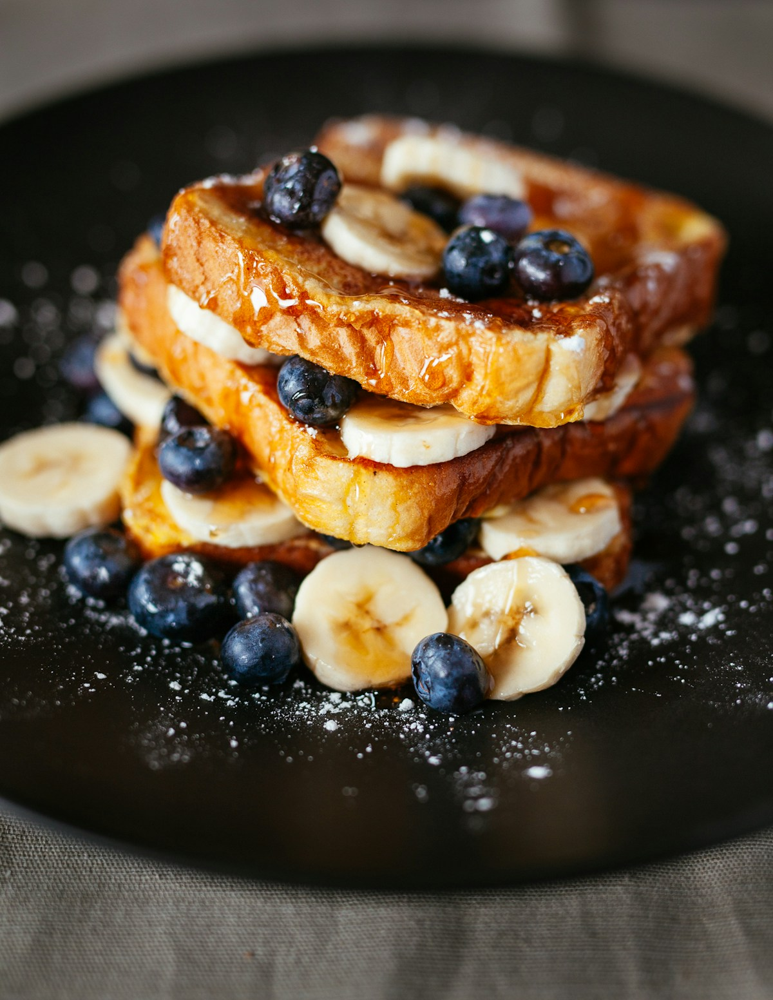

French Bistro • Byron Bay
Freshly baked brioche French toast, slow-simmered Mediterranean shakshuka skillets, smashed local avocado, and velvety Allpress espresso served on sunlit Fletcher Street.

Caramelized local bananas, seasonal berry compote & organic honeycomb crumble.
21 Fletcher Street, Byron Bay. Outdoor sunlit terrace and covered bistro dining.